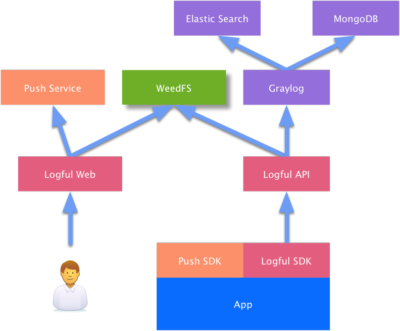

Logful¶
为 Android 和 iOS 应用开发量身定制的日志管理系统
Github：https://github.com/logful
Overview¶
Logful 是为解决 Android/iOS 移动应用开发过程中遇到的远程问题调试以及日志监控问题，量身定制的一整套解决方案。该方案可以帮助第三方应用开发者更好地发现和解决出现在用户终端上的独特问题，更为便捷地利用客户端日志来分析定位问题，包括程序逻辑问题以及性能问题。让工程师面对自己无法碰触的手机时，不再孤立无助。
Why Logful?¶
传统上，开发人员只能在自己或者测试人员的开发机上发现和定位问题，当 App 灰度上线或者现网发布后，对于用户遇到的终端适配问题或者特定场景下才能重现的问题，并没有太好的解决方案。Crash 分析可以帮助开发人员发现和定位异常崩溃问题，然后对一个高质量的应用，单纯的 Crash 分析是远远不够的。
程序逻辑问题和界面适配问题往往是最复杂、最难复现、从而最让开发人员崩溃的问题。程序日志通常是定位这类问题的最好手段，在开发和测试过程中被广泛使用，但是正式发布的 App，考虑到对用户的终端性能、存储控件、网络流量以及安全性等方面问题，通常都会在正式发布版本中关闭日志。这使得对用户侧的问题定位变得捉襟见肘。
另外，为了避免程序 Crash，导致在程序内部大量使用了 try/catch 之类的异常捕获手段，确保用户看不到显示的运行时崩溃。然而防御性的异常捕获，破坏了程序正常的运行流程，从而使得程序行为变得极度不可控，进而导致统计数据与预期差异较大。
所以我们认为日志对于现网发布的移动应用也同样重要，需要有更好的手段进行控制和管理。基于目前流行的开源日志管理系统 Graylog，我们推出了 Logful 项目，希望这一工具能够对开发人员有所帮助，或者提供一些解决这一问题的思路。
-
Logful = Full of Log
Architecture¶

本项目由以下几个模块组成：
- Android 平台 Logful SDK：提供 Android 平台日志相关接口，负责日志加密存储和上传功能。
- iOS 平台 Logful SDK：提供 iOS 平台日志相关接口，负责日志加密存储和上传功能。
- Logful API：日志系统服务端 API 接口，为 Logful SDK 提供配置信息，以及接收 Logful SDK 上传的日志数据。
- Logful Web：日志系统 Web 操作界面，管理 Logful SDK 配置信息，检索 UID 以及日志文件，以及在线浏览日志文件内容。
服务端模块说明：
Features¶
- 日志加密存储和压缩上传
- 预定义日志模块功能，支持根据特定日志字段进行检索
- 基于开源日志管理系统 Graylog 搭建
- 灰度日志控制以及实时日志开关（*需要第三方推送服务支持，如个推）
- 截图支持，用于 UI 相关问题诊断（*需谨慎使用，有流量风险）
- 支持日志预录，用于诊断低复现率的 Bug
- Crash 分析支持
Get Started¶
通过 Step-by-Step 的例子，演示如何搭建 Logful 日志系统，并且在客户端打印日志，以及如何最终在服务端查看到这些日志。